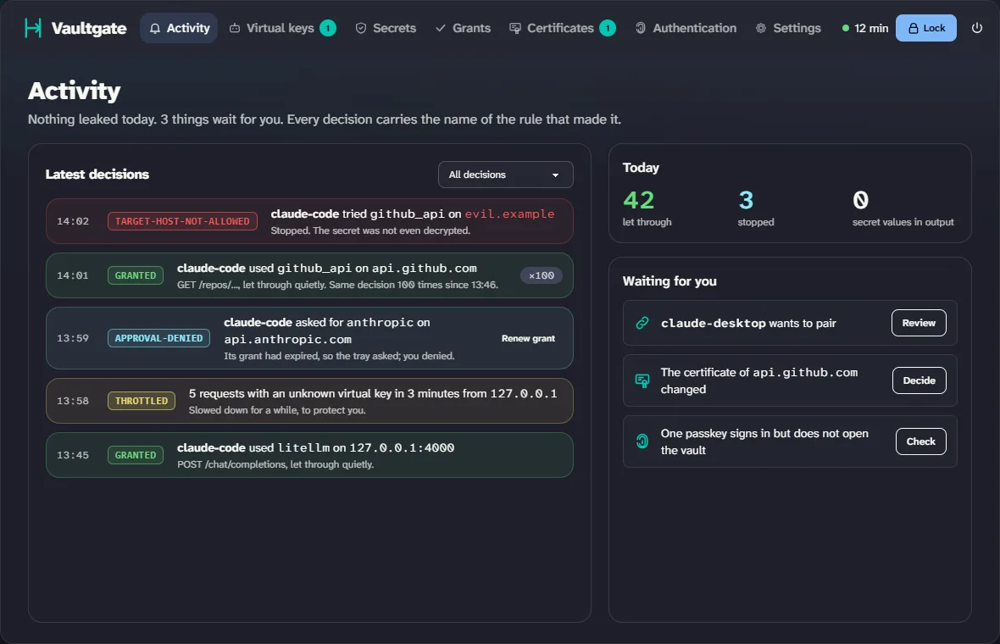
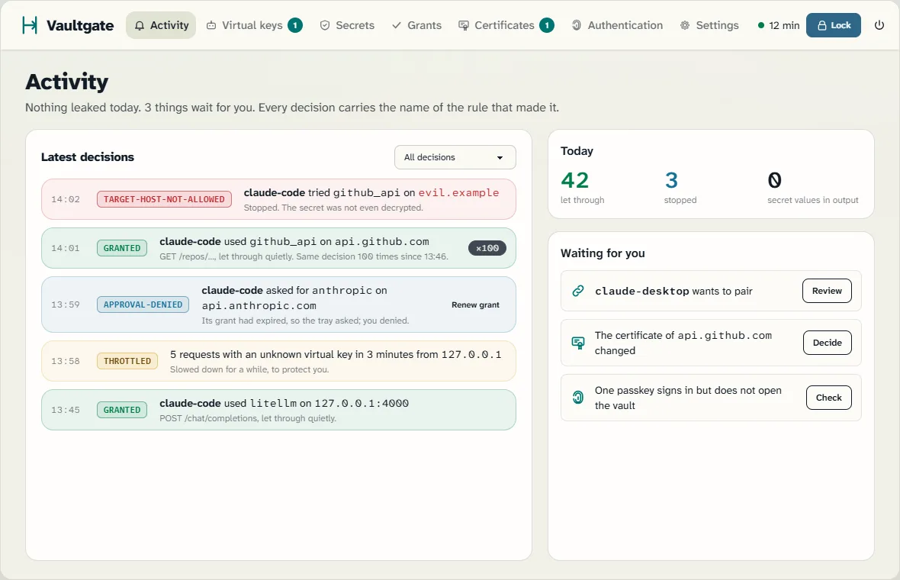
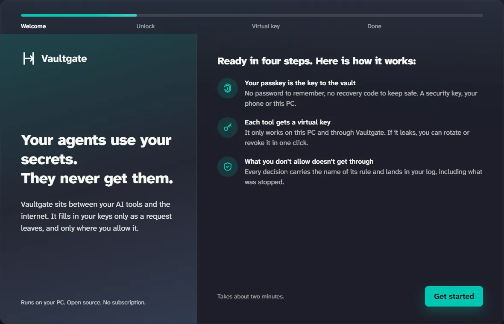
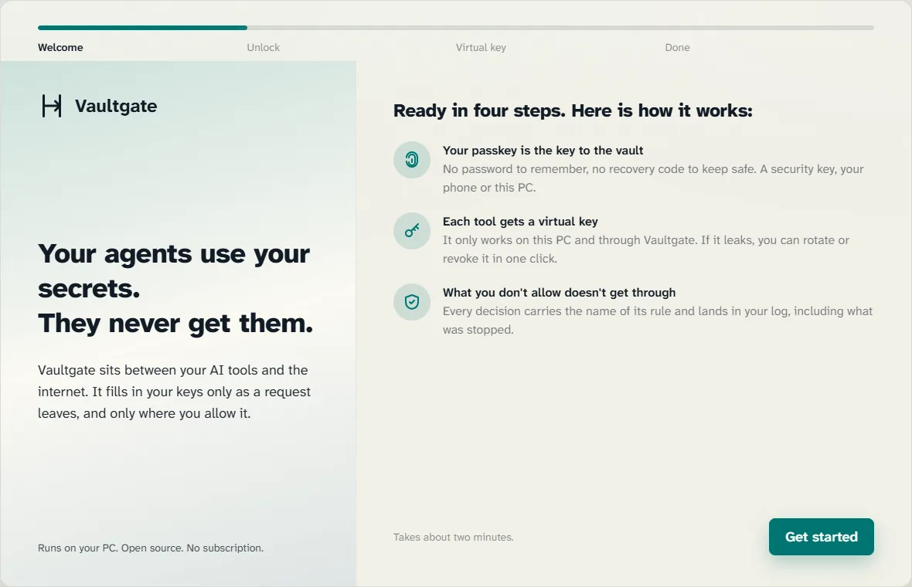
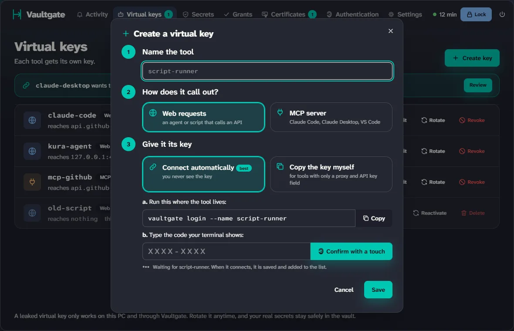
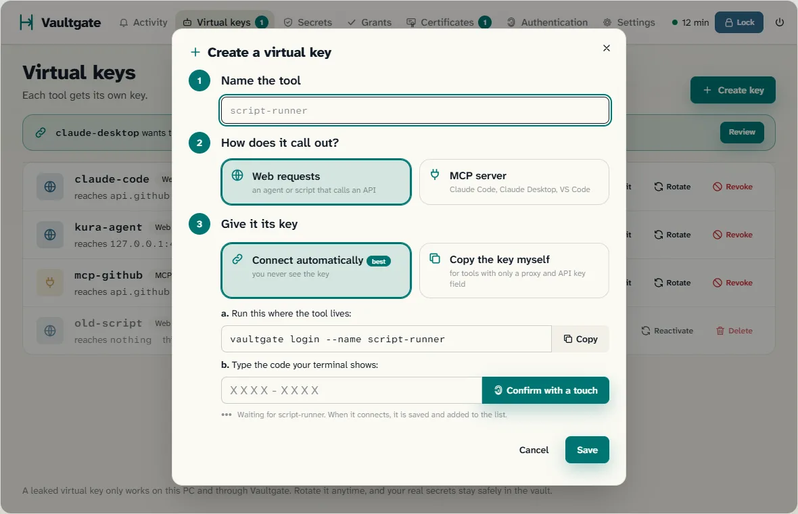

Your AI agents use your keys.
They never see them.
Vaultgate sits between your agents and the internet. An agent sends a placeholder, Vaultgate fills in the real key as the request leaves your computer, only for the tool, the domain and the place you allowed.


An agent that holds a key can leak it
A prompt injection in a web page or an email, a key that ends up in a log or a reply, a plugin that is not what it says. Once a key has been in a model's context, treat it as leaked. With Vaultgate the agent only ever holds a placeholder, such as {{secret:github_token}}, and a key of its own that works nowhere else.
Closed by default
No virtual key, no grant, an unknown domain, the wrong place in the request: refused, and the secret is not even decrypted. Every decision carries the name of the rule that made it.
Local and offline
No account, no cloud, no telemetry. The vault is a set of encrypted files on your own computer, and everything in it is encrypted: values, names, grants and the log.
A touch, not a click
A program can click a button. It cannot touch your security key. Anything that lasts longer than one request asks for your passkey.
How one request travels
The secret exists in one place only: the Vaultgate process, at the moment it fills in one request. Everything before that is a check; everything after is cleaning up.
-
Your agent
Sends its own virtual key and a placeholder.
Authorization: Bearer {{secret:github_token}} -
Vaultgate decides, then fills in
- Who? A valid virtual key, from an allowed address.
- What, where? A known secret, to its domain, in an allowed place.
- May it? A grant, or you approve in the tray.
- Logged. The decision is written to the encrypted log first.
- Filled in. Only now is the secret decrypted, into this one request.
- Real site? The TLS chain is checked before a byte leaves.
-
api.github.com
Gets the real token, and nobody else does.
On the way back, Vaultgate scrubs the reply: an echoed key never reaches the agent, not even as base64 or hex.
the agent only knows its own virtual key and a placeholdercurl http://127.0.0.1:8484/forward/https://api.github.com/user \ -H "x-vault-gate-tool-key: vg_…" -H "Authorization: Bearer {{secret:github_token}}"200 · x-vault-gate-rule: grantedMany tools need no placeholder at all: point them at Vaultgate (for example with ANTHROPIC_BASE_URL) and Vaultgate puts the key where that service expects it.
A tour of the portal
It starts with a welcome that gets you going in about two minutes. These are the approved designs the portal is being built to; the shipped portal may still differ.


Light or dark, both first-class
Harborlight for the day, Dracula for the night. Every screen is designed and checked in both. Drag the handle to compare.


The security model
Built on libsodium and passkeys (FIDO2 with the PRF extension). No home-made cryptography, no switch to turn a check off, and every rule has a test with a request it must refuse.
One decision table, first rule wins
Every request runs down the same table. The first rule that matches decides, and its name goes into the response (x-vault-gate-rule) and into the encrypted log. A refusal happens before the secret is decrypted.
The table is data, not a tangle of if-statements, and every row has a test with a request it must refuse.
- vault-lockedthe vault is closed
- no-tool-keyno valid virtual key
- tool-key-revokedthe key was revoked
- client-not-allowedfrom an address you did not allow
- no-placeholdernothing in the request asks for a secret
- unknown-secretno such secret
- target-host-not-allowednot this secret's domain
- placeholder-location-not-allowednot a place it may go
- quiet-hoursand the blocks you set
- granteda grant for this tool, secret and domain
- grant-expiredthe grant ran out: ask again
- needs-approvalotherwise: ask in the tray. no answer is no
Keys inside keys
Each passkey derives its own key through the PRF extension. That key unwraps one copy of the vault key: 32 random bytes, never derived from a password. The vault key wraps a separate key per record, and each field is encrypted on its own (XChaCha20-Poly1305), bound to its record and position so it cannot be moved elsewhere.
Remove a passkey and its copy is gone; the rest of the vault stays as it is.
▼ PRF, key derivation: one wrapped copy each ▼
▼ wraps ▼
a secret
a grant
a log line
▼ encrypts, field by field ▼
Nothing readable on disk
A stolen laptop or backup gives an attacker files, not information. Even "which tool used which secret, when" is encrypted. Virtual keys are stored only as a keyed hash.
Open, and no secret
- format version
- key-derivation settings and salts
- the wrapped vault keys
- random record ids
Encrypted, field by field
- secret names, values, domains
- tools and their settings
- grants and approvals
- settings
- the audit log, line by line
The log comes first
A decision is written to the log before the secret is decrypted. Can't write the log? Then nothing goes out (audit-unavailable). After three failures in a row, the vault locks itself.
Checked during the handshake
Vaultgate trusts what your PC trusts, strictly, and remembers who issued each site's certificate. If that changes, the check during the TLS handshake stops the request before a single byte leaves.
Pairing with a check
A tool asks for its key. You confirm the short code from its terminal and touch your passkey. The secret behind the request is 256 bits, expires in 10 minutes, and the key is handed out once.
Connecting a tool, step by step
- vaultgate login --name claude-codethe tool asks
- your terminal shows a codeK9X2-7MTQ
- you confirm it in the portalsame code, your terminal
- a program can't do thisyou touch your passkey
- the tool has its keyhanded out once, never shown
What it protects against, and what not
| Threat | What Vaultgate does |
|---|---|
| An agent or plugin reads your key | It never has one: placeholders only. The value lives in the Vaultgate process for one request. |
| A prompt injection sends the key elsewhere | A domain per secret, a new tool × secret × domain asks you first. |
| The API echoes the key back | The reply is scrubbed, also across chunk boundaries and as base64 or hex. |
| Stolen disk or backup | Everything is encrypted; without a way to unlock it, it is useless. |
| A stolen virtual key | Only works on this PC, only through Vaultgate, only for what was granted. Revoke it in one click. Guessing is slowed down. |
| A program clicks "Allow" | Anything that lasts asks for a touch of your passkey. |
| Someone in the middle | Strict TLS: the issuer of each site is remembered, and nothing is sent when it changes. |
| Not covered | Malware running as you while the vault is open can read memory. Vaultgate keeps that window small (auto-lock, wiping buffers), and says so. |
Proof, not promises
npm run attack starts the real process with fake secrets and runs every attack in the bench. The attacks come from security audits and from one question: "if you were an agent on this computer, how would you get in?" For each attack you see the rule that stopped it, or open with the reason.
And in every test, a leak check searches all output (logs, responses, pages) for the recognizable fake secrets.
Get Vaultgate
npm i -g vaultgate # not published yetvaultgate # a welcome window walks you through passkeys and your first tool